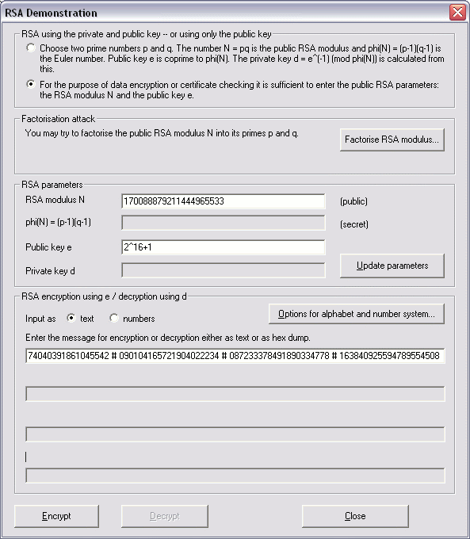
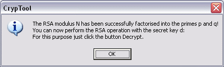
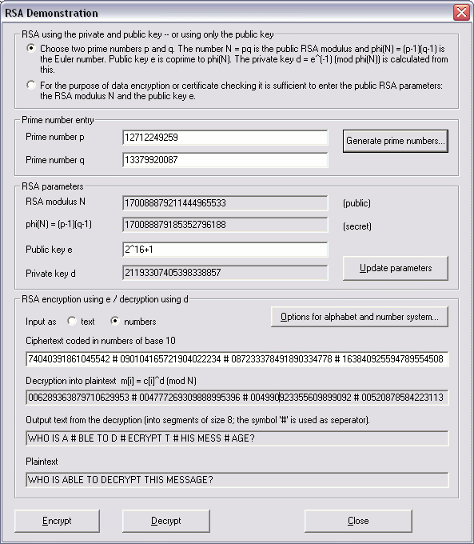

The RSA system's security is based on the fact that it is practically impossible to compute from the public RSA modulus N its two prime factors p and q, if N is sufficiently large.
For small key lengths you can try to factor N into its two prime factors p and q.
After you have entered the public modulus N and the public key e into the RSA Demonstration dialog, you can start this factorization by pressing the button Factorise RSA modulus.
After successful factorization the private parameters are entered automatically into the dialog and you can now decrypt and sign data.
Remark
The dialog RSA Demonstration has in its first group (upper bordered area) two radio buttons:Accordingly the second group box is changed.
If you first chose the lower view and then performed a successful factorization attack, the dialog automatically switches into the view of the owner.
Example of an factorization attack
In this example the prime factors p and q are within the range 233 and 234.


